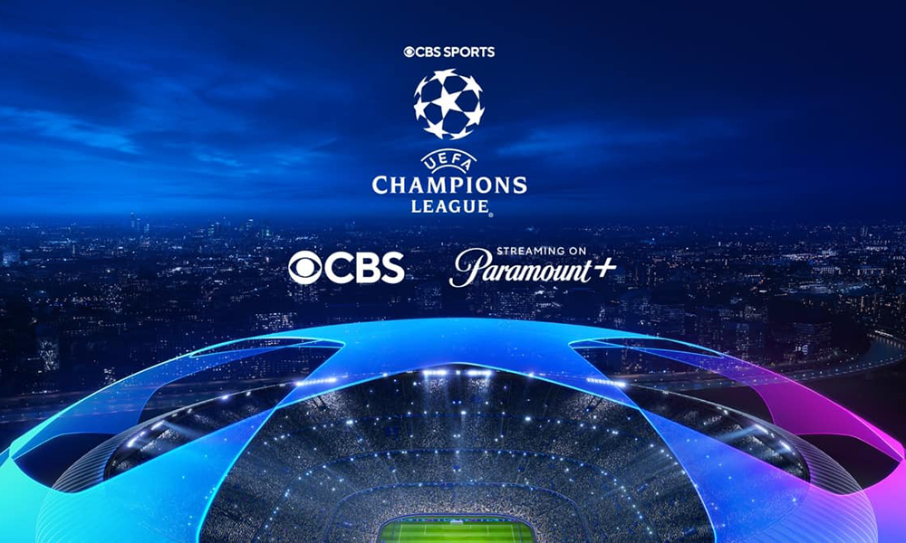
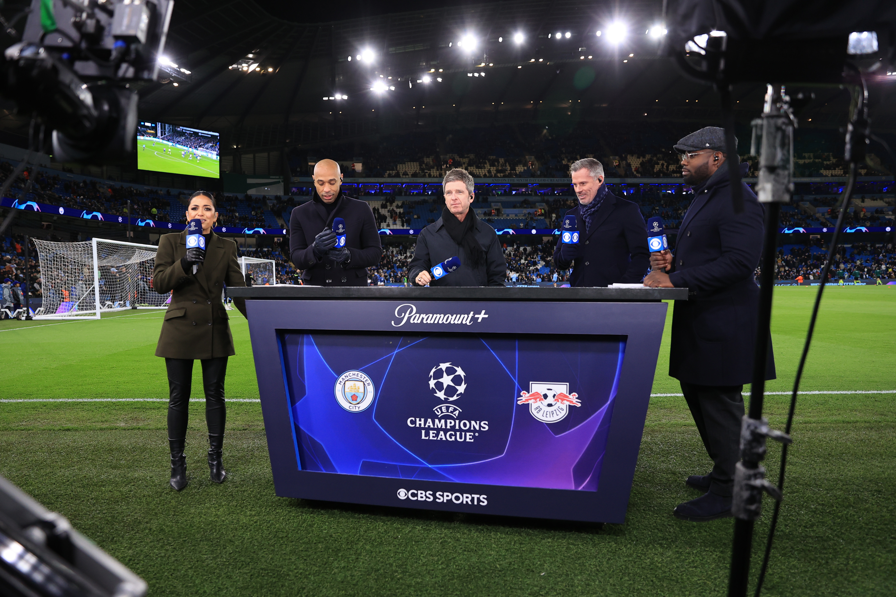
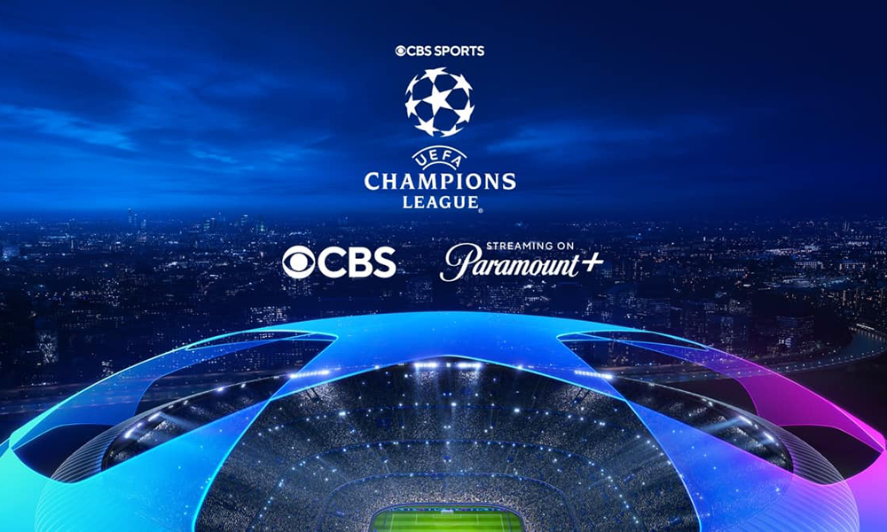
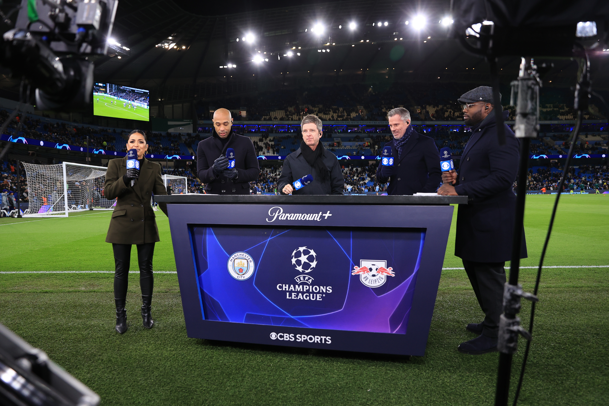
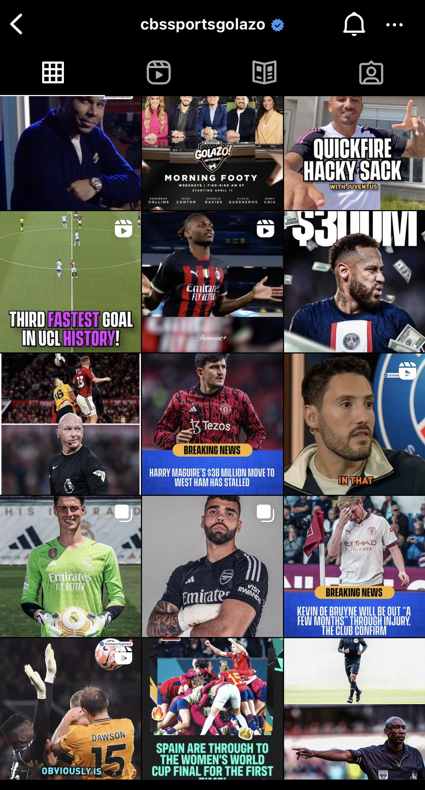
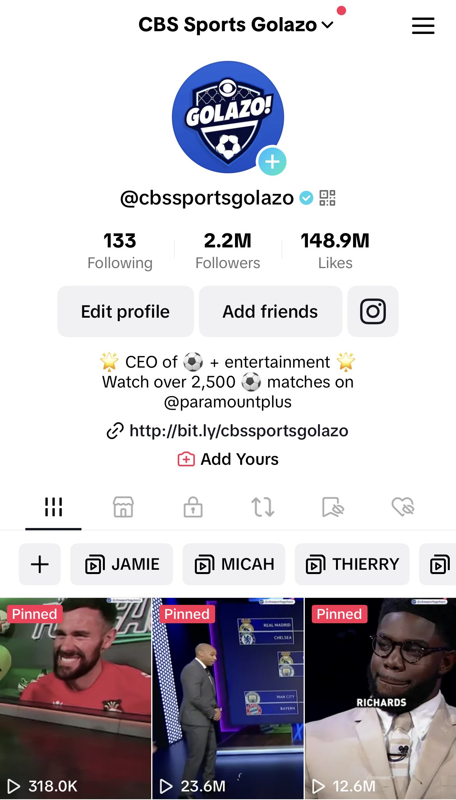
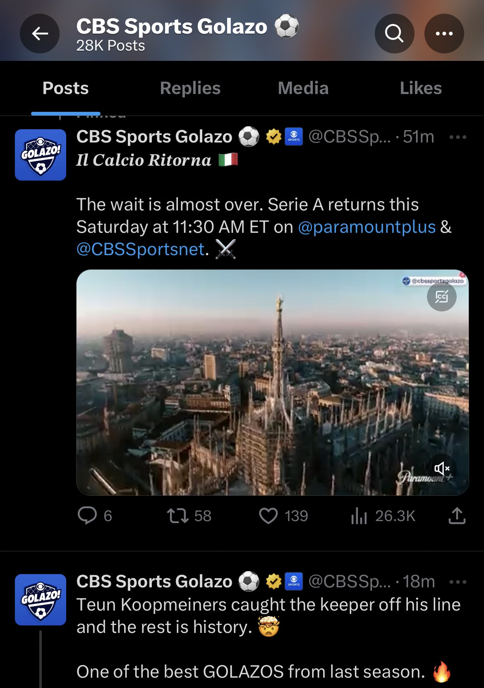
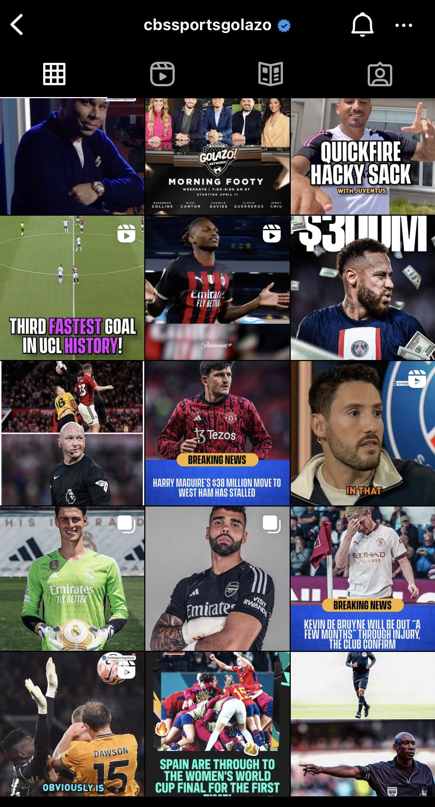
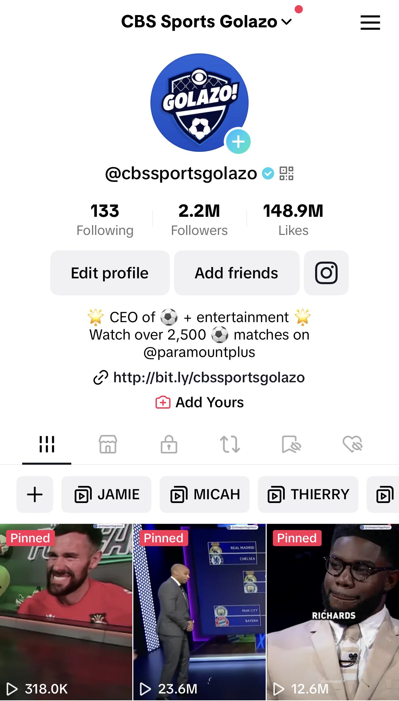
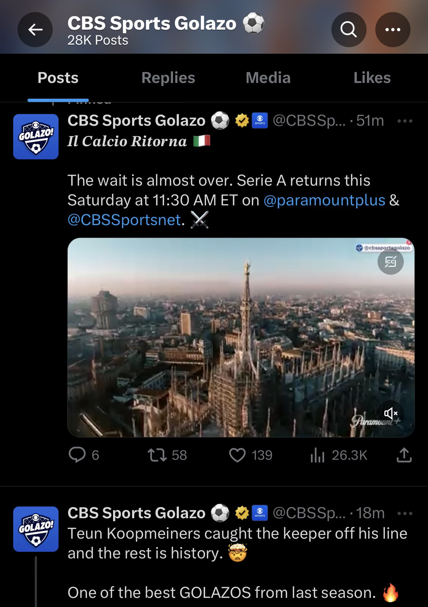

CBS
Social Media + Strategy
As part of the social media team, my responsibility includes creating content and creative briefs, as well as developing key strategies and digital strategy roadmaps.
The daily goal is to tell stories that matter while educating and entertaining the global soccer community. Through the use of a vast soccer portfolio (UEFA club competitions, CONCACAF, Brasileirao and Argentine Primera Division, National Women's Soccer League, Serie A, FA Women's Super League), on-air talent and studio shows, I was able to bring an audience to Paramount Plus through identifying and determing creative solutions.
Leveraging my innate connection to culture, and my deep knowledge of soccer, my work assisted in pushing CBS into the global soccer world, helping establish CBS as one of the major players in soccer media. Through understanding of CBS' audience, I appeal to a broad demographic of people, garnering millions of followers and subscribers on various social channels.
 



 




